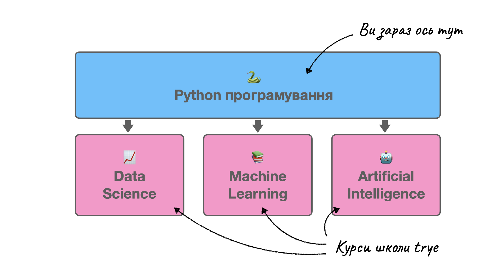

🐍 Python Програмування
2023-05-31
Вступ
🎈 Увага: Наразі книга знаходиться у стані розробки, усі глави постійно змінюються та доповнюються!
🎯 Яка мета цієї книги
Мета цієї книги – надати необхідні навички з Python програмування, на які спираються курси 📈 Data Science, 🤖 Machine Learning та 🧠 Artificial Intelligence у школі TRYE. Щоб зварити борщ, необхідно спочатку навчитись чистити картоплю, ви згодні? Тому у цій книзі ми будемо вчитись базовому програмуванню саме на рівні “чистити картоплю”.
Фокус цієї книги на практичних навичках. Вертаючись до нашого прикладу, щоб зварити борщ, вам не обов’язково знати його історію чи розуміти хімічний процес варіння картоплі. Проте ви повинні вміти закип’ятити воду та обсмажити овочі. Тому замість того щоб в деталях обговорювати теоретичне програмування, ми зразу почнемо кодувати.
Набір необхідних навичок є досить великим, тому ми намагалися звести цей набір до необхідного мінімуму. Якщо вам треба зварити борщ, то вам не обов’язково знати як правильно закручувати кебаб 🌯. Тому ви не знайдете у цій книзі більш специфічні теми як, наприклад, веброзробку або аналіз даних.
Більш того, ідея цієї книги полягає у тому, щоб навчити цим умінням якомога швидше. Чим швидше ви опануєте базові вміння у програмуванні, тим швидше ви зможете перейти до більш цікавих речей, втілення власних проєктів чи навіть пошуку стажування влітку.
І останнє. Ми намагалися побудувати цю книгу таким чином, щоб можна було опанувати будь-яку навичку окремо від інших, не читаючи усі попередні глави. Наприклад, щоб натерти моркву 🥕, вам необов’язково вміти різати цибулю 🧅. Ці навчки є незалежними і не вимагають від вас, щоб ви їх опанували за один раз. Саме такої філософії притримується ця книга.
🙋 Для кого ця книга
Читач цієї книги має досить чіткий портрет. Навчальні матеріали розраховані на учнів старших класів звичайної української школи 🏫, яка не обов’язково має нахил в точні науки.
Читач – вже доросла людина, яка замислюється над тим, що робити далі, який шлях вибрати, куди піти навчатись, які професії зараз мають попит тощо. І щоб зрозуміти що саме людині подобається в житі, це спершу треба спробувати. Ця книга дозволить вам зануритись у всесвіт програмування та відчути чи подобається це вам.
З іншого боку, читачем цієї книги може бути будь-хто, хто хоче почати програмувати. Звісно, приклади та завдання у цій книзі розраховані на знання та захоплення старшокласників. Проте, рівень цієї книги дозволяє зрозуміти концепти будь-кому.
🧰 Які зання та навички я отримаю
По завершенню цієї книги, читач буде:
- розуміти базові поняття у програмуванні
- розбиратись у галузях програмування
- працювати з записниками Google Colaboratory
- створювати змінні, використовувати оператори, викликати функції та методи об’єктів
- розуміти правила синтаксису Python
- працювати зі скалярними даними
- працювати зі списками
list, кортежамиtuple, словникамиdictта множинамиset - використовувати потоки керування, такі як умовні переходи
if/elseта циклиforтаwhile - створювати нові функції
- завантажувати та використовувати додаткові пакети
- працювати з пакетом NumPy
- візуалізувати деякі дані за допомогою бібліотеки matplotlib
- налагоджувати Python код
- ефективно шукати інформацію в Інтернеті
Іншими словами, по завершенню цієї книги у вас завжди в рюкзачку 🎒 буде мінімальний набір інструментів молодого кодера. На базі цього набору, ви вже будете розуміти які ще додаткові та більш спеціалізовані інструменти вам потрібні.
🚧 Як побудованна ця книга
Ця текстова книга не є єдиним та самостійним матеріалом для навчання.
По-перше, люди мають різноманітні канали ефективного сприймання інформації. Наприклад, одні люди найкраще засвоюють інформацію через лекції, інші – через текстові книжки, а треті – взагалі через схеми. Пригадайте, певно у вас є друзі які обожнюють голосові повідомлення, та ті, які сприймають тільки текстові повідомлення. Тому кожна глава цієї книги є також у вигляді відеолекції у YouTube та подкасту у Spotify.
По-друге, як було вже зазначено, акцент цієї книги на практичних навичках замість теоретичних знань. Як наслідок, щоб їх найшвидше розвинути, код який ми використовуємо в кожній главі, збережено в окремих записниках Google Colaboratory. Ви завжди можете відкрити той чи інший записник та запустити код власноруч, щоб подивитись результати. Але це не все. Головне, що ви повинні постійно робити – це експериментувати. Найшвидше навчаються люди з допитливим розумом. Тому ми заохочуємо питання на кшталт “А що буде, якщо..?”, які натхненні серіалом Marvel “What if?..”.
Майже останнє, але дуже важливе: одним з найпотужніших методів навчання залишається… вправи. Саме так! І тому кожна глава також доповнюється невеличким набором вправ, які реалізовані у вигляді Google Forms. Коли ви відповіли на усі питання, ви отримаєте електронного листа з правильними відповідями та поясненнями чому інші відповіді не підходять. Бонусом ви також будете мати доступ до так званих “шпор” – маленьких односторінкових PDF файлів зі найважливішими фактами глави. Іншими словами, стисло про головне!
Усі ці матеріали ви можете знайти на початку кожної глави натиснувши на відповідну кнопку. Вони виглядають ось так:
де:
- – посилання на відеолекцію у YouTube
- – посилання на подкаст-лекцію у Spotify
- – посилання на записник Google Colaboratory
- – посилання на вправи та завдання у Google Forms
- – посилання на “шпору”
Як вже було зазначено, кожна глава є самостійним та самодостатнім навчальним матеріалом, який мінімально залежить від попередніх глав. Іншими словами, якщо вам треба опанувати NumPy, вам необов’язково читати усі попередні глави.
🌍 Якою мовою написана ця книга
Якщо ви читаєте цей текст, то мабуть ви вже здогадалися, що книга написана українською мовою 🙂 Проте незабаром ви знайдете у цій книзі ниску термінів, які будуть виділені маркером, як наприклад, поняття змінна🇬🇧 varibale. Якщо ви наведете на цей термін курсор миші (або натисните, якщо ви читаєте зі смартфону), то зверху з’явиться підказка з перекладом терміну на англійську мову. Для нас дуже важливо почати звикати до англомовних термінів, і ось чому:
- переклади деяких термінів на українську не мають інтуїтивного асоціювання, тоді як терміни в англійській мають
- документація написана англійською, тому вам буде набагато легше орієнтуватися, якщо ви пам’ятаєте деякі ключові терміни
- більшість термінів також використовуються в інших мовах програмування, тому якщо вам знадобиться опанувати іншу мову, буде набагато простіше
- викладання комп’ютерних наук англійською вже є світовим стандартом
- усі дослідження в нашій галузі описані англійською
- ви зможете поспілкуватися зі спеціалістом з будь-якої точки на планеті, використовуючи одні й ті самі поняття
🧑🏫 Хто є автором
Автором цього навчального проєкту є Єгор Руднцький, PhD. До того як стати фундатором та викладачем школи TRYE, Єгор викладав науку про дані🇬🇧 data science, машинна навчання🇬🇧 machine learning та глибоке навчання🇬🇧 deep learning (та багато чого іншого) в провідних швейцарських університетах University of Lausanne та EPFL Extension Schoool. Має ступінь PhD в акуарній науці.
📚 Як ця книга вписується в программу школи trye
Такі галузі та підгалузі як аналіз даних🇬🇧 data analysis, наука про дані🇬🇧 data science, добування даних🇬🇧 data mining, статистика🇬🇧 statistics, машине навчання🇬🇧 machine learning, глибоке навчання🇬🇧 deep learning та штучний інтелект🇬🇧 artificial intelligence використовують програмування як один з найнеобхідніших інструментів. Тому усі три наші курси (📈 Data Science, 🤖 Machine Learning та 🧠 Artificial Intelligence) використовують базові знання та навички, які ви можете здобути з цієї книги.

Це не означає, що ви повинні прочитату усю книгу перед початком курсів у TRYE. Як раз навпаки – ця книга створенна як додаткові матеріали. Перед кожною лекцією 📈 Data Science, 🤖 Machine Learning та 🧠 Artificial Intelligence, ми будемо висилати номери глав, які необхідно знати для успішного проходження теми. Наприклад, коли ми будемо вивчати тему “Як зображення зберігаються на комп’ютері”, вимогою є знання з NumPy (Глава 18), посилання на яку ви отримаєте перед заняттям.